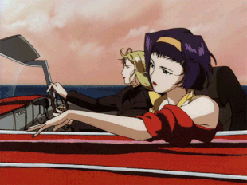
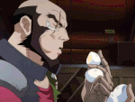
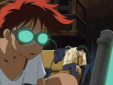
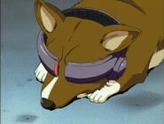
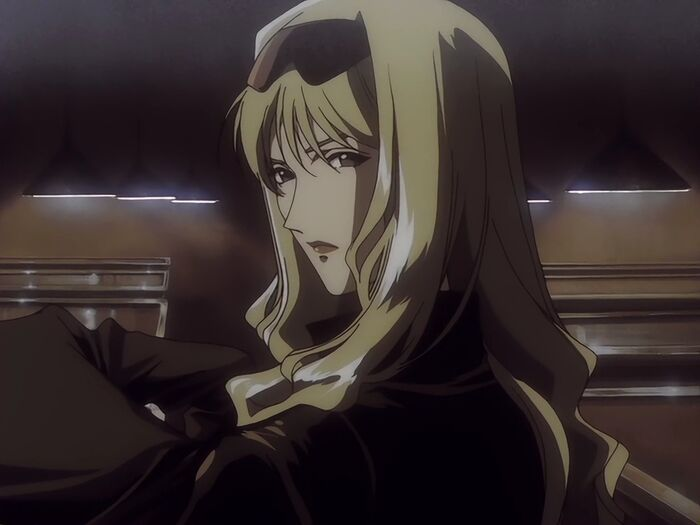
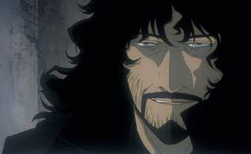
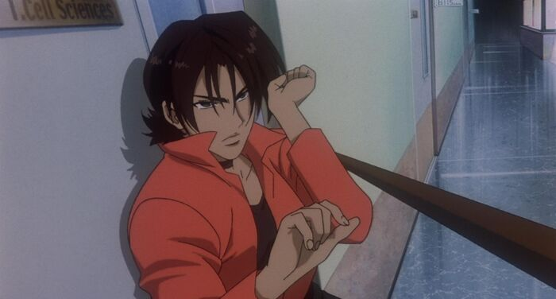

Spike Spiegel
Spike Spiegel (スパイク・スピーゲル Supaiku Supīgeru) is a former member of the Red Dragon Crime Syndicate, who left by faking his death after falling in love with a woman called Julia.
Faye Valentine
Faye Valentine (フェイ・ヴァレンタイン Fei Varentain) is a wanted bounty head and a member of the bounty hunting crew aboard the Bebop.
Jet Black
Jet Black (ジェット・ブラック Jetto Burakku) is an officer of the ISSP and later bounty hunter. He partnered with Fad until losing his arm in the mid-2060s. He then captained the Bebop and led a bounty-hunting crew including Spike Spiegel, Faye Valentine, and Edward.
Edward
Edward Wong Hau Pepelu Tivruski IV (エドワード・ウォン・ハウ・ペペル・チブルスキー4世 Edowādo Won Hau Peperu Chiburusukī Yonsei), born Françoise Appledelhi and colloquially known as Radical Edward, was a child prodigy skilled in hacking originally from Earth. Her father was the cartographer Mr. Appledelhi.
Ein
Ein (アイン Ain) is a Pembroke Welsh Corgi and "data dog," meaning that his intelligence was greatly enhanced by a research facility. What exactly was done to him was not widely known. Ein became part of the Bebop crew and was a good friend of Edward.
Julia
Julia was an affiliate of the Red Dragon crime syndicate who had relationships with Vicious and Spike Spiegel.
Vicious
Vicious (ビシャス Bishasu) was a member of the Red Dragon crime syndicate and veteran of the Titan War. He attempted a coup of the syndicate and became its leader briefly before being killed by Spike Spiegel.

Vincent
Vincent Volaju (ヴィンセント・ボラージュ) was a soldier in the Mars Army and veteran of the Titan War. During the war, he was a victim of an experimental military project. He later became a terrorist and died during the pursuit. Vincent devoted himself to finding the gateway to heaven at any cost.
Elektra
Elektra Ovirowa (エレクトラ・オヴィロゥ Erekutora Ovirō) was a soldier in the Mars Army and a veteran of the Titan War. She was in a relationship with Vincent Volaju and tried to save him from his insanity.
